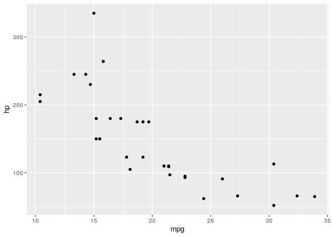

Easily add logs to your functions, without interfering with the global environment.
Installation
The package is available on CRAN. Install it with:
install.packages("chronicler")You can install the development version from GitHub with:
# install.packages("devtools")
devtools::install_github("b-rodrigues/chronicler")Introduction
{chronicler} provides the record() function, which allows you to modify functions so that they provide enhanced output. This enhanced output consists in a detailed log, and by chaining decorated functions, it becomes possible to have a complete trace of the operations that led to the final output. These decorated functions work exactly the same as their undecorated counterparts, but some care is required for correctly handling them. This introduction will give you a quick overview of this package’s functionality.
Let’s first start with a simple example, by decorating the sqrt() function:
Object a is now an object of class chronicle. Let’s take a closer look at a:
a
#> OK! Value computed successfully:
#> ---------------
#> Just
#> [1] 1.000000 1.414214 1.732051 2.000000 2.236068
#>
#> ---------------
#> This is an object of type `chronicle`.
#> Retrieve the value of this object with unveil(.c, "value").
#> To read the log of this object, call read_log(.c).a is now made up of several parts. The first part:
OK! Value computed successfully:
---------------
Just
[1] 1.000000 1.414214 1.732051 2.000000 2.236068simply provides the result of sqrt() applied to 1:5 (let’s ignore the word Just on the third line for now; for more details see the Maybe Monad vignette). The second part tells you that there’s more to it:
---------------
This is an object of type `chronicle`.
Retrieve the value of this object with unveil(.c, "value").
To read the log of this object, call read_log().The value of the sqrt() function applied to its arguments can be obtained using unveil(), as explained:
unveil(a, "value")
#> [1] 1.000000 1.414214 1.732051 2.000000 2.236068A log also gets generated and can be read using read_log():
read_log(a)
#> [1] "Complete log:"
#> [2] "OK! sqrt(1:5) ran successfully at 2025-08-14 12:17:16.047942"
#> [3] "Total running time: 0.000145673751831055"This is especially useful for objects that get created using multiple calls:
r_sqrt <- record(sqrt)
r_exp <- record(exp)
r_mean <- record(mean)
b <- 1:10 |>
r_sqrt() |>
bind_record(r_exp) |>
bind_record(r_mean)(bind_record() is used to chain multiple decorated functions and will be explained in detail in the next section.)
read_log(b)
#> [1] "Complete log:"
#> [2] "OK! sqrt(1:10) ran successfully at 2025-08-14 12:17:16.070962"
#> [3] "OK! exp(maybe::from_maybe(.c$value, default = maybe::nothing())) ran successfully at 2025-08-14 12:17:16.07299"
#> [4] "OK! mean(maybe::from_maybe(.c$value, default = maybe::nothing())) ran successfully at 2025-08-14 12:17:16.074803"
#> [5] "Total running time: 0.0001220703125"
unveil(b, "value")
#> [1] 11.55345record() works with any function, but not yet with ggplot2.
To avoid having to define every function individually, like this:
you can use the record_many() function. record_many() takes a list of functions (as strings) as an input and puts generated code in your system’s clipboard. You can then paste the code into your text editor. The gif below illustrates how record_many() works:

Chaining decorated functions
bind_record() is used to pass the output from one decorated function to the next:
library(dplyr)
#>
#> Attaching package: 'dplyr'
#> The following objects are masked from 'package:stats':
#>
#> filter, lag
#> The following objects are masked from 'package:base':
#>
#> intersect, setdiff, setequal, union
library(ggplot2)
r_group_by <- record(group_by)
r_select <- record(select)
r_summarise <- record(summarise)
r_filter <- record(filter)
output <- starwars %>%
r_select(height, mass, species, sex) %>%
bind_record(r_group_by, species, sex) %>%
bind_record(r_filter, sex != "male") %>%
bind_record(r_summarise,
mass = mean(mass, na.rm = TRUE)
)
read_log(output)
#> [1] "Complete log:"
#> [2] "OK! select(., height, mass, species, sex) ran successfully at 2025-08-14 12:17:16.095645"
#> [3] "OK! group_by(maybe::from_maybe(.c$value, default = maybe::nothing()), ..1, ..2) ran successfully at 2025-08-14 12:17:16.099652"
#> [4] "OK! filter(maybe::from_maybe(.c$value, default = maybe::nothing()), ..1) ran successfully at 2025-08-14 12:17:16.103561"
#> [5] "OK! summarise(maybe::from_maybe(.c$value, default = maybe::nothing()), ..1) ran successfully at 2025-08-14 12:17:16.107111"
#> [6] "Total running time: 0.0095522403717041"The value can then be accessed and worked on as usual using unveil(), as explained above:
unveil(output, "value")
#> # A tibble: 9 × 3
#> # Groups: species [9]
#> species sex mass
#> <chr> <chr> <dbl>
#> 1 Clawdite female 55
#> 2 Droid none 69.8
#> 3 Human female 56.3
#> 4 Hutt hermaphroditic 1358
#> 5 Kaminoan female NaN
#> 6 Mirialan female 53.1
#> 7 Tholothian female 50
#> 8 Togruta female 57
#> 9 Twi'lek female 55This package also ships with a dedicated pipe, %>=% which you can use instead of bind_record():
output_pipe <- starwars %>%
r_select(height, mass, species, sex) %>=%
r_group_by(species, sex) %>=%
r_filter(sex != "male") %>=%
r_summarise(mean_mass = mean(mass, na.rm = TRUE))
unveil(output_pipe, "value")
#> # A tibble: 9 × 3
#> # Groups: species [9]
#> species sex mean_mass
#> <chr> <chr> <dbl>
#> 1 Clawdite female 55
#> 2 Droid none 69.8
#> 3 Human female 56.3
#> 4 Hutt hermaphroditic 1358
#> 5 Kaminoan female NaN
#> 6 Mirialan female 53.1
#> 7 Tholothian female 50
#> 8 Togruta female 57
#> 9 Twi'lek female 55Using the %>=% is not recommended in non-interactive sessions and bind_record() is recommend in such settings.
Condition handling
By default, errors and warnings get caught and composed in the log:
errord_output <- starwars %>%
r_select(height, mass, species, sex) %>=%
r_group_by(species, sx) %>=% # typo, "sx" instead of "sex"
r_filter(sex != "male") %>=%
r_summarise(mass = mean(mass, na.rm = TRUE))
errord_output
#> NOK! Value computed unsuccessfully:
#> ---------------
#> Nothing
#>
#> ---------------
#> This is an object of type `chronicle`.
#> Retrieve the value of this object with unveil(.c, "value").
#> To read the log of this object, call read_log(.c).Reading the log tells you which function failed, and with which error message:
read_log(errord_output)
#> [1] "Complete log:"
#> [2] "OK! select(., height, mass, species, sex) ran successfully at 2025-08-14 12:17:16.155783"
#> [3] "NOK! group_by(c(\"structure(list(height = c(172L, 167L, 96L, 202L, 150L, 178L, \", \"165L, 97L, 183L, 182L, 188L, 180L, 228L, 180L, 173L, 175L, 170L, \", \"180L, 66L, 170L, 183L, 200L, 190L, 177L, 175L, 180L, 150L, NA, \", \"88L, 160L, 193L, 191L, 170L, 185L, 196L, 224L, 206L, 183L, 137L, \", \"112L, 183L, 163L, 175L, 180L, 178L, 79L, 94L, 122L, 163L, 188L, \", \"198L, 196L, 171L, 184L, 188L, 264L, 188L, 196L, 185L, 157L, 183L, \", \"183L, 170L, 166L, 165L, 193L, 191L, 183L, 168L, 198L, 229L, 213L, \", \"167L, 96L, 193L, 191L, 178L, 216L, 234L, 188L, 178L, 206L, NA, \", \n\"NA, NA, NA, NA), mass = c(77, 75, 32, 136, 49, 120, 75, 32, 84, \", \"77, 84, NA, 112, 80, 74, 1358, 77, 110, 17, 75, 78.2, 140, 113, \", \"79, 79, 83, NA, NA, 20, 68, 89, 90, NA, 45, 66, 82, NA, NA, NA, \", \"40, NA, NA, 80, NA, 55, 15, 45, NA, 65, 84, 82, 87, NA, 50, NA, \", \"NA, 80, NA, 85, NA, NA, 80, 56.2, 50, NA, 80, NA, 79, 55, 102, \", \"88, NA, NA, NA, 48, NA, 57, 159, 136, 79, 48, 80, NA, NA, NA, \", \"NA, NA), species = c(\\\"Human\\\", \\\"Droid\\\", \\\"Droid\\\", \\\"Human\\\", \\\"Human\\\", \", \"\\\"Human\\\", \\\"Human\\\", \\\"Droid\\\", \\\"Human\\\", \\\"Human\\\", \\\"Human\\\", \\\"Human\\\", \", \n\"\\\"Wookiee\\\", \\\"Human\\\", \\\"Rodian\\\", \\\"Hutt\\\", \\\"Human\\\", NA, \\\"Yoda's species\\\", \", \"\\\"Human\\\", \\\"Human\\\", \\\"Droid\\\", \\\"Trandoshan\\\", \\\"Human\\\", \\\"Human\\\", \\\"Mon Calamari\\\", \", \"\\\"Human\\\", \\\"Human\\\", \\\"Ewok\\\", \\\"Sullustan\\\", \\\"Human\\\", \\\"Neimodian\\\", \", \"\\\"Human\\\", \\\"Human\\\", \\\"Gungan\\\", \\\"Gungan\\\", \\\"Gungan\\\", \\\"Human\\\", \\\"Toydarian\\\", \", \"\\\"Dug\\\", \\\"Human\\\", \\\"Human\\\", \\\"Zabrak\\\", \\\"Twi'lek\\\", \\\"Twi'lek\\\", \\\"Aleena\\\", \", \"\\\"Vulptereen\\\", \\\"Xexto\\\", \\\"Toong\\\", \\\"Human\\\", \\\"Cerean\\\", \\\"Nautolan\\\", \", \n\"\\\"Zabrak\\\", \\\"Tholothian\\\", \\\"Iktotchi\\\", \\\"Quermian\\\", \\\"Kel Dor\\\", \\\"Chagrian\\\", \", \"NA, NA, \\\"Human\\\", \\\"Geonosian\\\", \\\"Mirialan\\\", \\\"Mirialan\\\", \\\"Human\\\", \", \"\\\"Human\\\", \\\"Human\\\", \\\"Human\\\", \\\"Clawdite\\\", \\\"Besalisk\\\", \\\"Kaminoan\\\", \", \"\\\"Kaminoan\\\", \\\"Human\\\", \\\"Droid\\\", \\\"Skakoan\\\", \\\"Muun\\\", \\\"Togruta\\\", \\\"Kaleesh\\\", \", \"\\\"Wookiee\\\", \\\"Human\\\", NA, \\\"Pau'an\\\", \\\"Human\\\", \\\"Human\\\", \\\"Human\\\", \", \"\\\"Droid\\\", \\\"Human\\\"), sex = c(\\\"male\\\", \\\"none\\\", \\\"none\\\", \\\"male\\\", \\\"female\\\", \", \"\\\"male\\\", \\\"female\\\", \\\"none\\\", \\\"male\\\", \\\"male\\\", \\\"male\\\", \\\"male\\\", \\\"male\\\", \", \n\"\\\"male\\\", \\\"male\\\", \\\"hermaphroditic\\\", \\\"male\\\", NA, \\\"male\\\", \\\"male\\\", \", \"\\\"male\\\", \\\"none\\\", \\\"male\\\", \\\"male\\\", \\\"male\\\", \\\"male\\\", \\\"female\\\", \\\"male\\\", \", \"\\\"male\\\", \\\"male\\\", \\\"male\\\", \\\"male\\\", \\\"male\\\", \\\"female\\\", \\\"male\\\", \\\"male\\\", \", \"\\\"male\\\", \\\"male\\\", \\\"male\\\", \\\"male\\\", \\\"male\\\", \\\"female\\\", \\\"male\\\", \\\"male\\\", \", \"\\\"female\\\", \\\"male\\\", \\\"male\\\", \\\"male\\\", \\\"male\\\", \\\"male\\\", \\\"male\\\", \\\"male\\\", \", \"\\\"male\\\", \\\"female\\\", \\\"male\\\", \\\"male\\\", \\\"male\\\", \\\"male\\\", NA, NA, \\\"male\\\", \", \n\"\\\"male\\\", \\\"female\\\", \\\"female\\\", \\\"female\\\", \\\"male\\\", \\\"male\\\", \\\"male\\\", \", \"\\\"female\\\", \\\"male\\\", \\\"male\\\", \\\"female\\\", \\\"female\\\", \\\"none\\\", \\\"male\\\", \", \"\\\"male\\\", \\\"female\\\", \\\"male\\\", \\\"male\\\", \\\"male\\\", NA, \\\"male\\\", \\\"male\\\", \", \"\\\"female\\\", \\\"male\\\", \\\"none\\\", \\\"female\\\")), row.names = c(NA, -87L), class = c(\\\"tbl_df\\\", \", \"\\\"tbl\\\", \\\"data.frame\\\"))\"), species, sx) ran unsuccessfully with following exception: Must group by variables found in `.data`.\n✖ Column `sx` is not found. at 2025-08-14 12:17:16.158648"
#> [4] "NOK! filter(structure(list(type = \"nothing\"), class = \"maybe\"), sex != \"male\") ran unsuccessfully with following exception: Pipeline failed upstream at 2025-08-14 12:17:16.186298"
#> [5] "NOK! summarise(structure(list(type = \"nothing\"), class = \"maybe\"), mean(mass, na.rm = TRUE)) ran unsuccessfully with following exception: Pipeline failed upstream at 2025-08-14 12:17:16.188189"
#> [6] "Total running time: 0.0239553451538086"It is also possible to only capture errors, or capture errors, warnings and messages using the strict parameter of record()
# Only errors:
r_sqrt <- record(sqrt, strict = 1)
r_sqrt(-10) |>
read_log()
#> Warning in .f(...): NaNs produced
#> [1] "Complete log:"
#> [2] "OK! sqrt(-10) ran successfully at 2025-08-14 12:17:16.201891"
#> [3] "Total running time: 0.000201940536499023"
# Errors and warnings:
r_sqrt <- record(sqrt, strict = 2)
r_sqrt(-10) |>
read_log()
#> [1] "Complete log:"
#> [2] "NOK! sqrt(-10) ran unsuccessfully with following exception: NaNs produced at 2025-08-14 12:17:16.204658"
#> [3] "Total running time: 9.67979431152344e-05"
# Errors, warnings and messages
my_f <- function(x){
message("this is a message")
10
}
record(my_f, strict = 3)(10) |>
read_log()
#> [1] "Complete log:"
#> [2] "NOK! my_f(10) ran unsuccessfully with following exception: this is a message\n at 2025-08-14 12:17:16.207209"
#> [3] "Total running time: 0.000124931335449219"Advanced logging
You can provide a function to record(), which will be evaluated on the output. This makes it possible to, for example, monitor the size of a data frame throughout the pipeline:
r_group_by <- record(group_by)
r_select <- record(select, .g = dim)
r_summarise <- record(summarise, .g = dim)
r_filter <- record(filter, .g = dim)
output_pipe <- starwars %>%
r_select(height, mass, species, sex) %>=%
r_group_by(species, sex) %>=%
r_filter(sex != "male") %>=%
r_summarise(mass = mean(mass, na.rm = TRUE))The $log_df element of a chronicle object contains detailed information:
unveil(output_pipe, "log_df")
#> ops_number outcome function
#> 1 1 OK! Success select
#> 2 2 OK! Success group_by
#> 3 3 OK! Success filter
#> 4 4 OK! Success summarise
#> arguments
#> 1 ., height, mass, species, sex
#> 2 c("structure(list(height = c(172L, 167L, 96L, 202L, 150L, 178L, ", "165L, 97L, 183L, 182L, 188L, 180L, 228L, 180L, 173L, 175L, 170L, ", "180L, 66L, 170L, 183L, 200L, 190L, 177L, 175L, 180L, 150L, NA, ", "88L, 160L, 193L, 191L, 170L, 185L, 196L, 224L, 206L, 183L, 137L, ", "112L, 183L, 163L, 175L, 180L, 178L, 79L, 94L, 122L, 163L, 188L, ", "198L, 196L, 171L, 184L, 188L, 264L, 188L, 196L, 185L, 157L, 183L, ", "183L, 170L, 166L, 165L, 193L, 191L, 183L, 168L, 198L, 229L, 213L, ", "167L, 96L, 193L, 191L, 178L, 216L, 234L, 188L, 178L, 206L, NA, ", \n"NA, NA, NA, NA), mass = c(77, 75, 32, 136, 49, 120, 75, 32, 84, ", "77, 84, NA, 112, 80, 74, 1358, 77, 110, 17, 75, 78.2, 140, 113, ", "79, 79, 83, NA, NA, 20, 68, 89, 90, NA, 45, 66, 82, NA, NA, NA, ", "40, NA, NA, 80, NA, 55, 15, 45, NA, 65, 84, 82, 87, NA, 50, NA, ", "NA, 80, NA, 85, NA, NA, 80, 56.2, 50, NA, 80, NA, 79, 55, 102, ", "88, NA, NA, NA, 48, NA, 57, 159, 136, 79, 48, 80, NA, NA, NA, ", "NA, NA), species = c(\\"Human\\", \\"Droid\\", \\"Droid\\", \\"Human\\", \\"Human\\", ", "\\"Human\\", \\"Human\\", \\"Droid\\", \\"Human\\", \\"Human\\", \\"Human\\", \\"Human\\", ", \n"\\"Wookiee\\", \\"Human\\", \\"Rodian\\", \\"Hutt\\", \\"Human\\", NA, \\"Yoda's species\\", ", "\\"Human\\", \\"Human\\", \\"Droid\\", \\"Trandoshan\\", \\"Human\\", \\"Human\\", \\"Mon Calamari\\", ", "\\"Human\\", \\"Human\\", \\"Ewok\\", \\"Sullustan\\", \\"Human\\", \\"Neimodian\\", ", "\\"Human\\", \\"Human\\", \\"Gungan\\", \\"Gungan\\", \\"Gungan\\", \\"Human\\", \\"Toydarian\\", ", "\\"Dug\\", \\"Human\\", \\"Human\\", \\"Zabrak\\", \\"Twi'lek\\", \\"Twi'lek\\", \\"Aleena\\", ", "\\"Vulptereen\\", \\"Xexto\\", \\"Toong\\", \\"Human\\", \\"Cerean\\", \\"Nautolan\\", ", \n"\\"Zabrak\\", \\"Tholothian\\", \\"Iktotchi\\", \\"Quermian\\", \\"Kel Dor\\", \\"Chagrian\\", ", "NA, NA, \\"Human\\", \\"Geonosian\\", \\"Mirialan\\", \\"Mirialan\\", \\"Human\\", ", "\\"Human\\", \\"Human\\", \\"Human\\", \\"Clawdite\\", \\"Besalisk\\", \\"Kaminoan\\", ", "\\"Kaminoan\\", \\"Human\\", \\"Droid\\", \\"Skakoan\\", \\"Muun\\", \\"Togruta\\", \\"Kaleesh\\", ", "\\"Wookiee\\", \\"Human\\", NA, \\"Pau'an\\", \\"Human\\", \\"Human\\", \\"Human\\", ", "\\"Droid\\", \\"Human\\"), sex = c(\\"male\\", \\"none\\", \\"none\\", \\"male\\", \\"female\\", ", "\\"male\\", \\"female\\", \\"none\\", \\"male\\", \\"male\\", \\"male\\", \\"male\\", \\"male\\", ", \n"\\"male\\", \\"male\\", \\"hermaphroditic\\", \\"male\\", NA, \\"male\\", \\"male\\", ", "\\"male\\", \\"none\\", \\"male\\", \\"male\\", \\"male\\", \\"male\\", \\"female\\", \\"male\\", ", "\\"male\\", \\"male\\", \\"male\\", \\"male\\", \\"male\\", \\"female\\", \\"male\\", \\"male\\", ", "\\"male\\", \\"male\\", \\"male\\", \\"male\\", \\"male\\", \\"female\\", \\"male\\", \\"male\\", ", "\\"female\\", \\"male\\", \\"male\\", \\"male\\", \\"male\\", \\"male\\", \\"male\\", \\"male\\", ", "\\"male\\", \\"female\\", \\"male\\", \\"male\\", \\"male\\", \\"male\\", NA, NA, \\"male\\", ", \n"\\"male\\", \\"female\\", \\"female\\", \\"female\\", \\"male\\", \\"male\\", \\"male\\", ", "\\"female\\", \\"male\\", \\"male\\", \\"female\\", \\"female\\", \\"none\\", \\"male\\", ", "\\"male\\", \\"female\\", \\"male\\", \\"male\\", \\"male\\", NA, \\"male\\", \\"male\\", ", "\\"female\\", \\"male\\", \\"none\\", \\"female\\")), row.names = c(NA, -87L), class = c(\\"tbl_df\\", ", "\\"tbl\\", \\"data.frame\\"))"), species, sex
#> 3 c("structure(list(height = c(172L, 167L, 96L, 202L, 150L, 178L, ", "165L, 97L, 183L, 182L, 188L, 180L, 228L, 180L, 173L, 175L, 170L, ", "180L, 66L, 170L, 183L, 200L, 190L, 177L, 175L, 180L, 150L, NA, ", "88L, 160L, 193L, 191L, 170L, 185L, 196L, 224L, 206L, 183L, 137L, ", "112L, 183L, 163L, 175L, 180L, 178L, 79L, 94L, 122L, 163L, 188L, ", "198L, 196L, 171L, 184L, 188L, 264L, 188L, 196L, 185L, 157L, 183L, ", "183L, 170L, 166L, 165L, 193L, 191L, 183L, 168L, 198L, 229L, 213L, ", "167L, 96L, 193L, 191L, 178L, 216L, 234L, 188L, 178L, 206L, NA, ", \n"NA, NA, NA, NA), mass = c(77, 75, 32, 136, 49, 120, 75, 32, 84, ", "77, 84, NA, 112, 80, 74, 1358, 77, 110, 17, 75, 78.2, 140, 113, ", "79, 79, 83, NA, NA, 20, 68, 89, 90, NA, 45, 66, 82, NA, NA, NA, ", "40, NA, NA, 80, NA, 55, 15, 45, NA, 65, 84, 82, 87, NA, 50, NA, ", "NA, 80, NA, 85, NA, NA, 80, 56.2, 50, NA, 80, NA, 79, 55, 102, ", "88, NA, NA, NA, 48, NA, 57, 159, 136, 79, 48, 80, NA, NA, NA, ", "NA, NA), species = c(\\"Human\\", \\"Droid\\", \\"Droid\\", \\"Human\\", \\"Human\\", ", "\\"Human\\", \\"Human\\", \\"Droid\\", \\"Human\\", \\"Human\\", \\"Human\\", \\"Human\\", ", \n"\\"Wookiee\\", \\"Human\\", \\"Rodian\\", \\"Hutt\\", \\"Human\\", NA, \\"Yoda's species\\", ", "\\"Human\\", \\"Human\\", \\"Droid\\", \\"Trandoshan\\", \\"Human\\", \\"Human\\", \\"Mon Calamari\\", ", "\\"Human\\", \\"Human\\", \\"Ewok\\", \\"Sullustan\\", \\"Human\\", \\"Neimodian\\", ", "\\"Human\\", \\"Human\\", \\"Gungan\\", \\"Gungan\\", \\"Gungan\\", \\"Human\\", \\"Toydarian\\", ", "\\"Dug\\", \\"Human\\", \\"Human\\", \\"Zabrak\\", \\"Twi'lek\\", \\"Twi'lek\\", \\"Aleena\\", ", "\\"Vulptereen\\", \\"Xexto\\", \\"Toong\\", \\"Human\\", \\"Cerean\\", \\"Nautolan\\", ", \n"\\"Zabrak\\", \\"Tholothian\\", \\"Iktotchi\\", \\"Quermian\\", \\"Kel Dor\\", \\"Chagrian\\", ", "NA, NA, \\"Human\\", \\"Geonosian\\", \\"Mirialan\\", \\"Mirialan\\", \\"Human\\", ", "\\"Human\\", \\"Human\\", \\"Human\\", \\"Clawdite\\", \\"Besalisk\\", \\"Kaminoan\\", ", "\\"Kaminoan\\", \\"Human\\", \\"Droid\\", \\"Skakoan\\", \\"Muun\\", \\"Togruta\\", \\"Kaleesh\\", ", "\\"Wookiee\\", \\"Human\\", NA, \\"Pau'an\\", \\"Human\\", \\"Human\\", \\"Human\\", ", "\\"Droid\\", \\"Human\\"), sex = c(\\"male\\", \\"none\\", \\"none\\", \\"male\\", \\"female\\", ", "\\"male\\", \\"female\\", \\"none\\", \\"male\\", \\"male\\", \\"male\\", \\"male\\", \\"male\\", ", \n"\\"male\\", \\"male\\", \\"hermaphroditic\\", \\"male\\", NA, \\"male\\", \\"male\\", ", "\\"male\\", \\"none\\", \\"male\\", \\"male\\", \\"male\\", \\"male\\", \\"female\\", \\"male\\", ", "\\"male\\", \\"male\\", \\"male\\", \\"male\\", \\"male\\", \\"female\\", \\"male\\", \\"male\\", ", "\\"male\\", \\"male\\", \\"male\\", \\"male\\", \\"male\\", \\"female\\", \\"male\\", \\"male\\", ", "\\"female\\", \\"male\\", \\"male\\", \\"male\\", \\"male\\", \\"male\\", \\"male\\", \\"male\\", ", "\\"male\\", \\"female\\", \\"male\\", \\"male\\", \\"male\\", \\"male\\", NA, NA, \\"male\\", ", \n"\\"male\\", \\"female\\", \\"female\\", \\"female\\", \\"male\\", \\"male\\", \\"male\\", ", "\\"female\\", \\"male\\", \\"male\\", \\"female\\", \\"female\\", \\"none\\", \\"male\\", ", "\\"male\\", \\"female\\", \\"male\\", \\"male\\", \\"male\\", NA, \\"male\\", \\"male\\", ", "\\"female\\", \\"male\\", \\"none\\", \\"female\\")), class = c(\\"grouped_df\\", ", "\\"tbl_df\\", \\"tbl\\", \\"data.frame\\"), row.names = c(NA, -87L), groups = structure(list(", " species = c(\\"Aleena\\", \\"Besalisk\\", \\"Cerean\\", \\"Chagrian\\", \\"Clawdite\\", ", " \\"Droid\\", \\"Dug\\", \\"Ewok\\", \\"Geonosian\\", \\"Gungan\\", \\"Human\\", \\"Human\\", ", \n" \\"Hutt\\", \\"Iktotchi\\", \\"Kaleesh\\", \\"Kaminoan\\", \\"Kaminoan\\", \\"Kel Dor\\", ", " \\"Mirialan\\", \\"Mon Calamari\\", \\"Muun\\", \\"Nautolan\\", \\"Neimodian\\", ", " \\"Pau'an\\", \\"Quermian\\", \\"Rodian\\", \\"Skakoan\\", \\"Sullustan\\", \\"Tholothian\\", ", " \\"Togruta\\", \\"Toong\\", \\"Toydarian\\", \\"Trandoshan\\", \\"Twi'lek\\", ", " \\"Twi'lek\\", \\"Vulptereen\\", \\"Wookiee\\", \\"Xexto\\", \\"Yoda's species\\", ", " \\"Zabrak\\", NA), sex = c(\\"male\\", \\"male\\", \\"male\\", \\"male\\", \\"female\\", ", " \\"none\\", \\"male\\", \\"male\\", \\"male\\", \\"male\\", \\"female\\", \\"male\\", ", \n" \\"hermaphroditic\\", \\"male\\", \\"male\\", \\"female\\", \\"male\\", \\"male\\", ", " \\"female\\", \\"male\\", \\"male\\", \\"male\\", \\"male\\", \\"male\\", \\"male\\", ", " \\"male\\", \\"male\\", \\"male\\", \\"female\\", \\"female\\", \\"male\\", \\"male\\", ", " \\"male\\", \\"female\\", \\"male\\", \\"male\\", \\"male\\", \\"male\\", \\"male\\", ", " \\"male\\", NA), .rows = structure(list(46L, 70L, 51L, 58L, 69L, ", " c(2L, 3L, 8L, 22L, 74L, 86L), 40L, 29L, 62L, 35:37, c(5L, ", " 7L, 27L, 34L, 42L, 65L, 73L, 84L, 87L), c(1L, 4L, 6L, ", \n" 9L, 10L, 11L, 12L, 14L, 17L, 20L, 21L, 24L, 25L, 28L, ", " 31L, 33L, 38L, 41L, 50L, 61L, 66L, 67L, 68L, 80L, 83L, ", " 85L), 16L, 55L, 78L, 72L, 71L, 57L, 63:64, 26L, 76L, ", " 52L, 32L, 82L, 56L, 15L, 75L, 30L, 54L, 77L, 49L, 39L, ", " 23L, 45L, 44L, 47L, c(13L, 79L), 48L, 19L, c(43L, 53L", " ), c(18L, 59L, 60L, 81L)), ptype = integer(0), class = c(\\"vctrs_list_of\\", ", " \\"vctrs_vctr\\", \\"list\\"))), class = c(\\"tbl_df\\", \\"tbl\\", \\"data.frame\\"", "), row.names = c(NA, -41L), .drop = TRUE))"\n), sex != "male"
#> 4 c("structure(list(height = c(167L, 96L, 150L, 165L, 97L, 175L, 200L, ", "150L, 185L, 163L, 178L, 184L, 170L, 166L, 165L, 168L, 213L, 167L, ", "96L, 178L, NA, NA, NA), mass = c(75, 32, 49, 75, 32, 1358, 140, ", "NA, 45, NA, 55, 50, 56.2, 50, NA, 55, NA, NA, NA, 57, NA, NA, ", "NA), species = c(\\"Droid\\", \\"Droid\\", \\"Human\\", \\"Human\\", \\"Droid\\", ", "\\"Hutt\\", \\"Droid\\", \\"Human\\", \\"Human\\", \\"Human\\", \\"Twi'lek\\", \\"Tholothian\\", ", "\\"Mirialan\\", \\"Mirialan\\", \\"Human\\", \\"Clawdite\\", \\"Kaminoan\\", \\"Human\\", ", \n"\\"Droid\\", \\"Togruta\\", \\"Human\\", \\"Droid\\", \\"Human\\"), sex = c(\\"none\\", ", "\\"none\\", \\"female\\", \\"female\\", \\"none\\", \\"hermaphroditic\\", \\"none\\", ", "\\"female\\", \\"female\\", \\"female\\", \\"female\\", \\"female\\", \\"female\\", \\"female\\", ", "\\"female\\", \\"female\\", \\"female\\", \\"female\\", \\"none\\", \\"female\\", \\"female\\", ", "\\"none\\", \\"female\\")), class = c(\\"grouped_df\\", \\"tbl_df\\", \\"tbl\\", ", "\\"data.frame\\"), row.names = c(NA, -23L), groups = structure(list(", " species = c(\\"Clawdite\\", \\"Droid\\", \\"Human\\", \\"Hutt\\", \\"Kaminoan\\", ", \n" \\"Mirialan\\", \\"Tholothian\\", \\"Togruta\\", \\"Twi'lek\\"), sex = c(\\"female\\", ", " \\"none\\", \\"female\\", \\"hermaphroditic\\", \\"female\\", \\"female\\", \\"female\\", ", " \\"female\\", \\"female\\"), .rows = structure(list(16L, c(1L, 2L, ", " 5L, 7L, 19L, 22L), c(3L, 4L, 8L, 9L, 10L, 15L, 18L, 21L, ", " 23L), 6L, 17L, 13:14, 12L, 20L, 11L), ptype = integer(0), class = c(\\"vctrs_list_of\\", ", " \\"vctrs_vctr\\", \\"list\\"))), row.names = c(NA, -9L), .drop = TRUE, class = c(\\"tbl_df\\", ", "\\"tbl\\", \\"data.frame\\")))"\n), mean(mass, na.rm = TRUE)
#> message start_time end_time run_time g
#> 1 NA 2025-08-14 12:17:16 2025-08-14 12:17:16 0.0007326603 secs 87, 4
#> 2 NA 2025-08-14 12:17:16 2025-08-14 12:17:16 0.0009438992 secs NA
#> 3 NA 2025-08-14 12:17:16 2025-08-14 12:17:16 0.0008692741 secs 23, 4
#> 4 NA 2025-08-14 12:17:16 2025-08-14 12:17:16 0.0011398792 secs 9, 3
#> diff_obj lag_outcome
#> 1 NULL <NA>
#> 2 NULL OK! Success
#> 3 NULL OK! Success
#> 4 NULL OK! SuccessIt is thus possible to take a look at the output of the function provided (dim()) using check_g():
check_g(output_pipe)
#> ops_number function g
#> 1 1 select 87, 4
#> 2 2 group_by NA
#> 3 3 filter 23, 4
#> 4 4 summarise 9, 3We can see that the dimension of the dataframe was (87, 4) after the call to select(), (23, 4) after the call to filter() and finally (9, 3) after the call to summarise().
Another possibility for advanced logging is to use the diff argument in record, which defaults to “none”. Setting it to “full” provides, at each step of a workflow, the diff between the input and the output:
r_group_by <- record(group_by)
r_select <- record(select, diff = "full")
r_summarise <- record(summarise, diff = "full")
r_filter <- record(filter, diff = "full")
output_pipe <- starwars %>%
r_select(height, mass, species, sex) %>=%
r_group_by(species, sex) %>=%
r_filter(sex != "male") %>=%
r_summarise(mass = mean(mass, na.rm = TRUE))Let’s compare the input and the output to r_filter(sex != "male"):
# The following line generates a data frame with columns `ops_number`, `function` and `diff_obj`
# it is possible to filter on the step of interest using the `ops_number` or the `function` column
diff_pipe <- check_diff(output_pipe)
diff_pipe %>%
filter(`function` == "filter") %>% # <- backticks around `function` are required
pull(diff_obj)
#> [[1]]
#> < input
#> > output
#> @@ 1,15 / 1,15 @@
#> < # A tibble: 87 × 4
#> > # A tibble: 23 × 4
#> < # Groups: species, sex [41]
#> > # Groups: species, sex [9]
#> height mass species sex
#> <int> <dbl> <chr> <chr>
#> < 1 172 77 Human male
#> 2 167 75 Droid none
#> 3 96 32 Droid none
#> < 4 202 136 Human male
#> 5 150 49 Human female
#> < 6 178 120 Human male
#> 7 165 75 Human female
#> 8 97 32 Droid none
#> > 6 175 1358 Hutt hermaphroditic
#> > 7 200 140 Droid none
#> < 9 183 84 Human male
#> > 8 150 NA Human female
#> < 10 182 77 Human male
#> > 9 185 45 Human female
#> > 10 163 NA Human female
#> < # ℹ 77 more rows
#> > # ℹ 13 more rowsIf you are familiar with the version control software Git, you should have no problem reading this output. The input was a data frame of 87 rows and 4 columns, and the output only had 23 rows. Rows that were in the input, and got removed from the output, are highlighted (in the terminal, but not here, due to the color scheme). If diff is set to “summary”, then only a summary is provided:
r_group_by <- record(group_by)
r_select <- record(select, diff = "summary")
r_summarise <- record(summarise, diff = "summary")
r_filter <- record(filter, diff = "summary")
output_pipe <- starwars %>%
r_select(height, mass, species, sex) %>=%
r_group_by(species, sex) %>=%
r_filter(sex != "male") %>=%
r_summarise(mass = mean(mass, na.rm = TRUE))
diff_pipe <- check_diff(output_pipe)
diff_pipe %>%
filter(`function` == "filter") %>% # <- backticks around `function` are required
pull(diff_obj)
#> [[1]]
#>
#> Found differences in 5 hunks:
#> 8 insertions, 8 deletions, 7 matches (lines)
#>
#> Diff map (line:char scale is 1:1 for single chars, 1:1 for char seqs):
#> DDII..D..D.D..DDDIIIIIIBy combining .g and diff, it is possible to have a very clear overview of what happened to the very first input throughout the pipeline. diff functionality is provided by the diffobj package.
Recording ggplot
This package provides a record() implementation for ggplot2 called record_ggplot(). It is a separate function for two main reasons:
- ggplot specifications are composed of multiple function calls.
- ggplot specifications are lazily evaluated, meaning that errors aren’t thrown immediately. For example:
# Notice the double "g" in "mpgg"
plot_1 <- ggplot(data = mtcars) + geom_point(aes(y = hp, x = mpgg))
# The error is not thrown here due to ggplot's lazy evaluationThe error will only be thrown when you force evaluation, for example by printing plot_1.
The function record_ggplot() takes the ggplot specification as the first argument. It can also take the strict argument mentioned above.
r_plot_1 <- record_ggplot(ggplot(data = mtcars) + geom_point(aes(y = hp, x = mpg)))The output of this function is the same as for record():
unveil(r_plot_1, "value")
read_log(r_plot_1)
#> [1] "Complete log:"
#> [2] "OK! ggplot(data = mtcars) + geom_point(aes(y = hp, x = mpg))() ran successfully at 2025-08-14 12:17:16.797693"
#> [3] "Total running time: 0.061201810836792"Thanks
I’d like to thank armcn, Kupac for their blog posts (here) and packages (maybe) which inspired me to build this package. Thank you as well to TimTeaFan for his help with writing the %>=% infix operator, nigrahamuk for showing me a nice way to catch errors, and finally Mwavu for pointing me towards the right direction with an issue I’ve had as I started working on this package. Thanks to Putosaure for designing the hex logo.